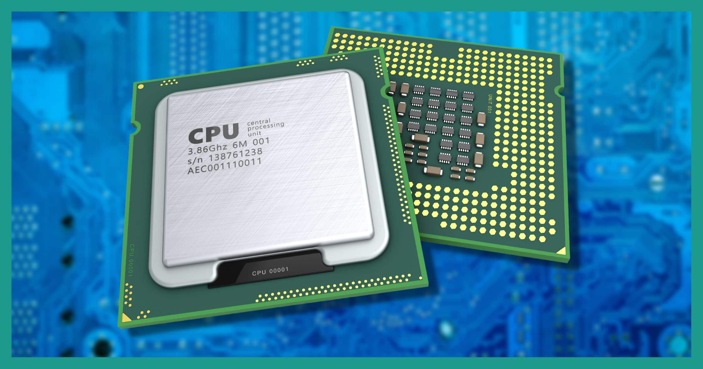
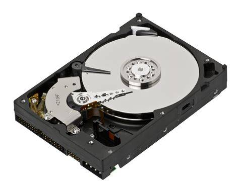
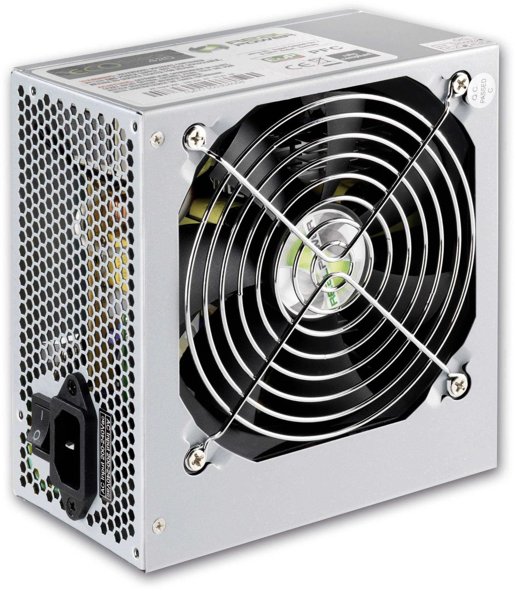
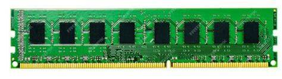

Computer Hardware Components
CPU (Central Processing Unit)
The CPU (Central Processing Unit) is often called the "brain" of the computer. It is a microprocessor that executes instructions from programs, performs calculations, and manages the flow of information through the system. The CPU interprets and carries out basic instructions that operate the computer, making it essential for running software, managing hardware, and performing tasks from simple arithmetic to complex decision-making. Its speed and efficiency directly impact the overall performance of the computer.
| Specification | Description |
|---|---|
| Clock Speed | Measured in GHz, determines how many operations the CPU can perform per second. Modern CPUs typically range from 2.0 GHz to 5.0+ GHz. |
| Cores | Physical processing units that can handle separate tasks simultaneously. Most modern CPUs have 4 to 16 cores. |
| Cache Memory | High-speed memory built into the CPU for quick data access. Usually organized in levels (L1, L2, L3). |
| Socket Type | Physical interface between CPU and motherboard (e.g., AM4, LGA 1700). |
Advantages
- Higher clock speeds = faster processing
- Multiple cores enable multitasking
- Modern CPUs include integrated graphics
- Advanced power management features
Considerations
- Higher performance = more heat
- May require advanced cooling
- Can be expensive for high-end models
- Must match motherboard socket
RAM (Random Access Memory)

RAM (Random Access Memory) is the short-term memory of a computer, temporarily storing data and instructions that the CPU needs while performing tasks. Unlike storage drives, RAM is volatile, meaning its contents are lost when the computer is powered off. Having more RAM allows a computer to run more applications simultaneously and handle larger files, improving multitasking and overall responsiveness. RAM is essential for smooth operation in gaming, content creation, and everyday computing.
| Specification | Description |
|---|---|
| Capacity | Modern systems typically have 8GB to 32GB, with high-end systems reaching 64GB or more. |
| Speed | Measured in MHz or GHz. DDR4 typically ranges from 2400MHz to 4800MHz. |
| Type | Current standard is DDR4, with DDR5 becoming more common. Each generation offers improved performance. |
| Timings | CAS Latency and other timing measurements affect responsiveness and performance. |
Advantages
- Extremely fast data access
- Essential for multitasking
- Easy to upgrade in most systems
- Improves overall system responsiveness
Considerations
- Temporary storage only (clears when powered off)
- More expensive per GB than storage drives
- Must match motherboard compatibility
- Higher speeds may require BIOS configuration
Storage Devices
Storage devices are responsible for saving and retrieving digital data, both permanently and temporarily. They store the operating system, software applications, personal files, and all other data on a computer. There are two main types: Hard Disk Drives (HDDs), which use spinning disks and magnetic storage, and Solid State Drives (SSDs), which use flash memory for faster performance and greater reliability. The choice of storage affects speed, capacity, durability, and cost.
- HDD (Hard Disk Drive)
- Mechanical storage
- Higher capacity, lower cost
- SSD (Solid State Drive)
- Flash storage
- Faster speeds, more reliable
Motherboard
The motherboard is the primary circuit board in a computer, acting as the central hub that connects and allows communication between all other components, including the CPU, RAM, storage devices, graphics card, and peripheral devices. It distributes power, manages data flow, and determines the system's expandability, compatibility, and available features. The quality and capabilities of the motherboard influence the computer's stability, performance, and upgrade options.
| Specification | Description |
|---|---|
| CPU Socket Type | Determines which CPUs are compatible (e.g., Intel LGA 1700, AMD AM4). |
| RAM Slots | Number and type of memory slots (e.g., 2 or 4 DDR4/DDR5 slots). |
| Expansion Slots | PCIe slots for graphics cards, sound cards, and other add-ons. |
| Form Factor | Physical size and shape (e.g., ATX, Micro-ATX, Mini-ITX). |
| Chipset | Controls features like overclocking, USB ports, and storage options. |
| Storage Connectors | SATA, M.2, and NVMe slots for hard drives and SSDs. |
| I/O Ports | USB, HDMI, Ethernet, audio, and other external connections. |
Advantages
- Central hub for all components
- Allows for system upgrades and expansion
- Modern boards offer advanced connectivity (USB-C, Wi-Fi, Bluetooth)
- Controls system stability and performance
Considerations
- Must match CPU and RAM compatibility
- Limited upgrade options on small form factors
- Quality and features vary by price
- Complex installation for beginners
Graphics Card (GPU)

The graphics card, or GPU (Graphics Processing Unit), is a specialized electronic circuit designed to rapidly manipulate and alter memory to accelerate the creation of images and video intended for output to a display. Unlike the CPU, which handles general-purpose tasks, the GPU is optimized for parallel processing, making it ideal for rendering complex graphics, running visual effects, and handling large amounts of data simultaneously. Modern GPUs are crucial for gaming, video editing, 3D rendering, scientific simulations, and powering technologies like artificial intelligence and machine learning. A dedicated graphics card can significantly improve a computer's visual performance and enable support for multiple high-resolution monitors, virtual reality, and advanced graphical features.
| Specification | Description |
|---|---|
| GPU Chip | The main processor for graphics tasks (e.g., NVIDIA GeForce, AMD Radeon). |
| VRAM | Dedicated video memory for textures and frame buffers. Modern cards range from 4GB to 24GB or more. |
| Memory Type | GDDR6, GDDR6X, or HBM2 for high bandwidth and performance. |
| Outputs | HDMI, DisplayPort, DVI, and sometimes USB-C for monitors and VR headsets. |
| Power Connector | 6-pin, 8-pin, or 12-pin connectors for additional power. |
| Ray Tracing | Hardware support for realistic lighting and shadows in games. |
Advantages
- Enables high-quality gaming and 3D rendering
- Accelerates video editing and creative work
- Supports multiple monitors
- Dedicated VRAM reduces load on system RAM
Considerations
- High-end GPUs can be expensive
- Consumes significant power and generates heat
- Large cards may not fit in all cases
- May require a strong power supply
Power Supply Unit (PSU)
The Power Supply Unit (PSU) is a critical component that converts electrical power from an outlet into usable power for the computer's internal components. It supplies stable and reliable voltage to the motherboard, CPU, GPU, drives, and peripherals, protecting them from power surges and fluctuations. The PSU's wattage, efficiency, and build quality directly affect system stability, energy consumption, and the ability to support high-performance hardware.
- Wattage
- Efficiency Rating
- Modular/Non-modular
- Protection Features